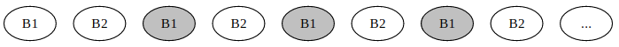

You can control the I/O operations of your program manually, but most of the time people just rely on automatic bufferization and caching, either due to laziness or because of the computing environment limitations.
But automatic caching comes with its own challenges. When a program runs out of working memory to store its intermediate data, it needs to get rid of one block to make space for a new one. A concrete rule for deciding which data to retain in the cache in case of conflicts is called an eviction policy.
This rule can be arbitrary, but there are several popular choices:
- First in first out (FIFO): simply evict the earliest added block, without any regard to how often it was accessed before (the same way as a FIFO queue).
- Least recently used (LRU): evict the block that has not been accessed for the longest period of time.
- Last in first out (LIFO) and most recently used (MRU): the opposite of the previous two. It seems harmful to delete the hottest blocks, but there are scenarios where these policies are optimal, such as repeatedly looping around a file in a cycle.
- Least-frequently used (LFU): counts how often each block has been requested and discards the one used least often. Some variations also account for changing access patterns over time, such as using a time window to only consider the last $n$ accesses or using exponential averaging to give recent accesses more weight.
- Random replacement (RR): discard a block randomly. The advantage is that it does not need to maintain any data structures with block information.
There is a natural trade-off between the accuracy of eviction policies and the additional overhead due to the complexity of their implementations. For a CPU cache, you need a simple policy that can be easily implemented in hardware with next-to-zero latency, while in more slow-paced and plannable settings such as Netflix deciding in which data centers to store their movies or Google Drive optimizing where to store user data, it makes sense to use more complex policies, possibly involving some machine learning to predict when the data is going to be accessed next.
#Optimal Caching
Apart from the aforementioned strategies, there is also the theoretical optimal policy, denoted as $OPT$ or $MIN$, which determines, for a given sequence of queries, which blocks should be retained to minimize the total number of cache misses.
These decisions can be made using a simple greedy approach called Bélády’s algorithm: on a miss, evict the block whose next access is latest in the future, treating a block that is never requested again as the best possible victim. An exchange argument shows that replacing any other block cannot avoid more future misses. The downside is that you either need to have the request sequence in advance or somehow be able to predict the future.
The good thing is that a small amount of extra cache capacity gives LRU a constant-factor guarantee. Sleator and Tarjan showed the following resource-augmentation bound.
Theorem. Let $LRU_M(\sigma)$ and $OPT_{M/2}(\sigma)$ be the numbers of cache misses on the same request sequence $\sigma$, using LRU with $M$ bytes and the optimal policy with $M/2$ bytes respectively. Assume blocks have size $B$ and $k=M/B$ is even, set $h=k/2$, and allow arbitrary initial cache contents. Then
$$ LRU_M(\sigma) \leq \frac{k}{k-h+1} OPT_{M/2}(\sigma) + h < 2 \cdot OPT_{M/2}(\sigma) + \frac{M}{2B}. $$After the first request, both caches contain the block that was just requested. Consider any later interval, let $p$ be the block requested immediately before it, and suppose LRU misses $f \leq k$ times. If LRU misses twice on one block during the interval, or misses on $p$, it must have seen at least $k$ other distinct blocks in between. Otherwise, its $f$ missed blocks are distinct and different from $p$. In either case, the interval together with $p$ involves at least $f+1$ distinct blocks.
The optimal cache begins the interval holding $p$ and has room for only $h-1$ of the other blocks, so it must miss at least $f-h+1$ times when this quantity is positive. Now partition the sequence from the end into $s_0, s_1, \ldots, s_q$: the prefix $s_0$ contains the first request and at most $k$ LRU misses, while every later interval contains exactly $k$. The argument above gives at least $k-h+1$ optimal misses in each later interval. If LRU has $f_0$ misses in $s_0$, the same counting without a common initial block gives at least $f_0-h$ optimal misses there. Therefore $f_0 \leq OPT_{M/2}(s_0)+h$, and every later interval contributes at most $k/(k-h+1)$ times its optimal misses. Since this factor is at least one, summing the intervals proves the stated bound. With $h=k/2$, the factor is strictly less than two.

This is a very relieving result. The additive term is at most one fill of the smaller cache, so it disappears in asymptotic I/O bounds for long request sequences. We may analyze $OPT$ with $M/2$ memory and transfer the result to LRU with $M$ memory at a factor below two. The theorem does not say that LRU matches $OPT$ with the same cache size, or that every other replacement policy has the same guarantee.
#Implementing Caching
It is not always trivial to find the right block to evict in a reasonable time. While CPU caches are implemented in hardware (usually as some variation of LRU), higher-level eviction policies have to rely on software to store certain statistics about the blocks and maintain data structures on top of them to speed up the process.
Let’s think about what we need to implement an LRU cache. Assume we are storing some moderately large objects — say, we need to develop a cache for a database, where both the requests and replies are medium-sized strings in some SQL dialect, so the overhead of our structure is small but non-negligible.
First of all, we need a hash table to find the data itself. Since we are working with large variable-length strings, it makes sense to use the hash of the query as the key and a pointer to a heap-allocated result string as the value.
To implement the LRU logic, the simplest approach would be to create a queue where we put the current time and IDs/keys of objects when we access them, and also store when each object was accessed the last time (not necessarily as a timestamp — any increasing counter will suffice).
Now, when we need to free up space, we can find the least recently used object by popping elements from the front of the queue. We can’t just delete them, because it may be that they were accessed again since their record was added to the queue. So we need to check if the time of when we put them in queue matches the time of when they were last accessed, and only then free up the memory.
The only remaining issue here is that we add an entry to the queue each time a block is accessed, and only remove entries when we have a cache miss and start popping them off from the front until we have a match. This may lead to the queue overflowing, and to mitigate this, instead of adding an entry and forgetting about it, we can move it to the end of the queue on a cache hit right away.
To support this, we need to implement the queue over a doubly-linked list and store a pointer to the block’s node in the queue in the hash table. Then, when we have a cache hit, we follow the pointer and remove the node from the linked list in constant time, and add a newer node to the end of the queue. This way, at any point in time, there would be exactly as many nodes in the queue as we have objects, and the memory overhead will be guaranteed to be constant per cache entry.
Here is the complete LRU bookkeeping for a small fixed-capacity cache. To keep the example direct, keys are integers in $[0, U)$ and where is a direct-address table. For arbitrary strings, it can be replaced by the hash table described above without changing the list logic.
const int U = 1 << 20;
const int C = 1024;
struct Node {
int key, value;
int prev, next;
};
Node node[C];
int where[U];
int head = -1, tail = -1, used = 0;
void init_cache() {
head = tail = -1;
used = 0;
for (int key = 0; key < U; key++)
where[key] = -1;
}
void unlink_node(int i) {
int p = node[i].prev;
int q = node[i].next;
if (p == -1) head = q;
else node[p].next = q;
if (q == -1) tail = p;
else node[q].prev = p;
}
void append_node(int i) {
node[i].prev = tail;
node[i].next = -1;
if (tail == -1) head = i;
else node[tail].next = i;
tail = i;
}
void touch(int i) {
unlink_node(i);
append_node(i);
}
bool get(int key, int *value) {
int i = where[key];
if (i == -1)
return false;
*value = node[i].value;
touch(i);
return true;
}
void put(int key, int value) {
int i = where[key];
if (i != -1) {
node[i].value = value;
touch(i);
return;
}
if (used < C) {
i = used++;
} else {
i = head;
unlink_node(i);
where[node[i].key] = -1;
}
node[i] = {key, value, -1, -1};
where[key] = i;
append_node(i);
}
The head is always the least recently used entry and the tail is the most recently used one. get and put each perform a constant number of table lookups and pointer-index updates, so all operations take $O(1)$ time. The implementation uses indices rather than raw pointers so that reusing a node cannot invalidate the table.
As an exercise, try to think about ways to implement other caching strategies.